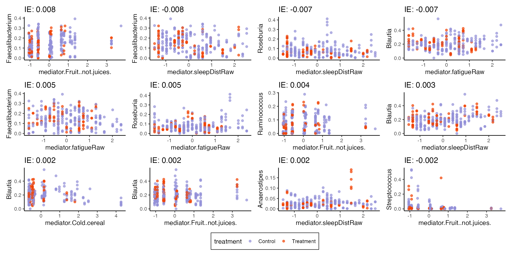
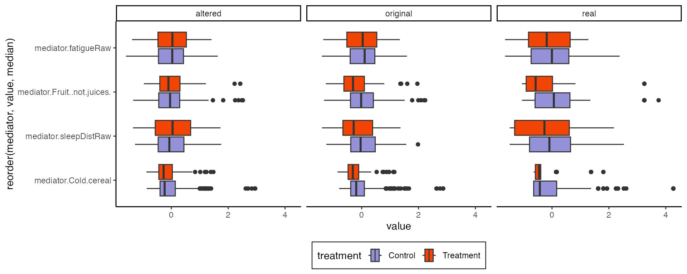
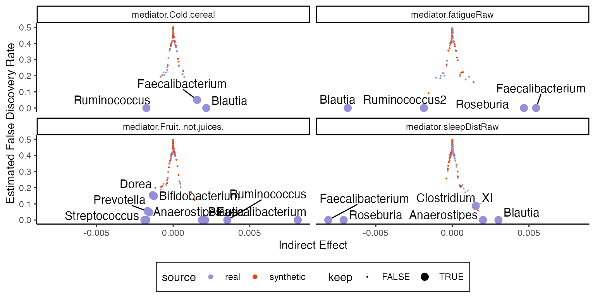
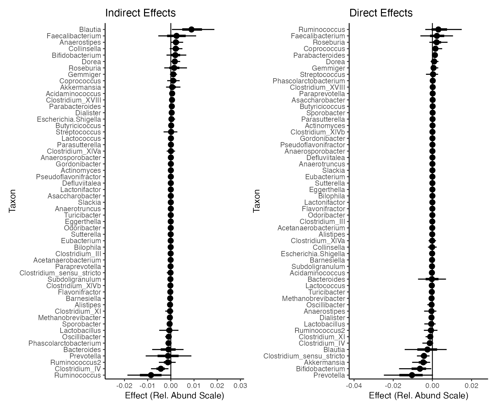

In most microbiome mediation analysis studies, microbiome composition is thought to mediate some outcome of interest. Sometimes, though, we might want to treat the microbiome as an outcome. Our motivating example here looks at the relationship between mindfulness and the microbiome. In this setting, we might imagine that mindfulness training influences behaviors (diet, sleep, exercise) that could then change the microbiome. Clinical surveys that gauge those behaviors now play the role of mediator. Alternatively, mindfulness could trigger neurophysiological changes that influence the microbiome in more subtle ways. The point of mediation analysis is to provide evidence for one or the other of these possibilities.
library(ggdist)
library(ggrepel)
library(phyloseq)
library(tidyverse)
library(multimedia)
data(mindfulness)
set.seed(20231228)This package needs a mediation_data object to organize
the pretreatment, treatment, mediator, and outcome variables.
taxa_names(mindfulness) specifies that we want all the taxa
names to be outcome variables. We’ve already appended all the mediator
variable names with the prefix “mediator,” so we can specify them using
the starts_with selector. We’ll treat the
subject column as pretreatment variables. The study tracked
participants across a few timepoints, and we want to control for
different baseline behavioral and microbiome profiles.
exper <- mediation_data(
mindfulness,
taxa_names(mindfulness),
"treatment",
starts_with("mediator"),
"subject"
)
exper#> [Mediation Data]
#> 307 samples with measurements for,
#> 1 treatment: treatment
#> 4 mediators: mediator.sleepDistRaw, mediator.fatigueRaw, ...
#> 55 outcomes: Defluviitalea, Gordonibacter, ...
#> 1 pretreatment: subjectThis block applies a logistic-normal multinomial model to the microbiome outcome. This is an example where the response variables are all modeled jointly. We’ll use a ridge regression model for each of the mediators. This is a better choice than ordinary linear models because we have to estimate many subject-level parameters, and our sample size is not that large.
# use Flavonifractor as the reference for the log-ratio transform
outcomes(exper) <- outcomes(exper) |>
select(Flavonifractor, everything())
model <- multimedia(
exper,
lnm_model(seed = .Random.seed[1]),
glmnet_model(lambda = 0.5, alpha = 0)
) |>
estimate(exper)#> Chain 1: ------------------------------------------------------------
#> Chain 1: EXPERIMENTAL ALGORITHM:
#> Chain 1: This procedure has not been thoroughly tested and may be unstable
#> Chain 1: or buggy. The interface is subject to change.
#> Chain 1: ------------------------------------------------------------
#> Chain 1:
#> Chain 1:
#> Chain 1:
#> Chain 1: Gradient evaluation took 0.01147 seconds
#> Chain 1: 1000 transitions using 10 leapfrog steps per transition would take 114.7 seconds.
#> Chain 1: Adjust your expectations accordingly!
#> Chain 1:
#> Chain 1:
#> Chain 1: Begin eta adaptation.
#> Chain 1: Iteration: 1 / 250 [ 0%] (Adaptation)
#> Chain 1: Iteration: 50 / 250 [ 20%] (Adaptation)
#> Chain 1: Iteration: 100 / 250 [ 40%] (Adaptation)
#> Chain 1: Iteration: 150 / 250 [ 60%] (Adaptation)
#> Chain 1: Iteration: 200 / 250 [ 80%] (Adaptation)
#> Chain 1: Success! Found best value [eta = 1] earlier than expected.
#> Chain 1:
#> Chain 1: Begin stochastic gradient ascent.
#> Chain 1: iter ELBO delta_ELBO_mean delta_ELBO_med notes
#> Chain 1: 100 -243307.612 1.000 1.000
#> Chain 1: 200 -99580.409 1.222 1.443
#> Chain 1: 300 -90008.408 0.850 1.000
#> Chain 1: 400 -87376.289 0.645 1.000
#> Chain 1: 500 -85962.756 0.519 0.106
#> Chain 1: 600 -85132.538 0.434 0.106
#> Chain 1: 700 -84674.011 0.373 0.030
#> Chain 1: 800 -84249.244 0.327 0.030
#> Chain 1: 900 -84035.521 0.291 0.016
#> Chain 1: 1000 -83782.160 0.262 0.016
#> Chain 1: 1100 -83487.854 0.163 0.010 MEDIAN ELBO CONVERGED
#> Chain 1:
#> Chain 1: Drawing a sample of size 1000 from the approximate posterior...
#> Chain 1: COMPLETED.Evaluating Effects
With this model, we can estimate direct and indirect effects. We’re averaging over different settings of the mediator treatment variables. Since the LNM model outputs relative abundance profiles, all the estimated effects should be interpreted on a probability scale.
direct <- direct_effect(model, exper)
direct |>
group_by(outcome) |>
summarise(direct_effect = mean(direct_effect)) |>
arrange(-abs(direct_effect))#> # A tibble: 55 × 2
#> outcome direct_effect
#>
#> 1 Blautia -0.0597
#> 2 Faecalibacterium -0.0315
#> 3 Bifidobacterium 0.0146
#> 4 Prevotella 0.00965
#> 5 Clostridium_XlVa 0.00711
#> 6 Ruminococcus 0.00695
#> 7 Dorea 0.00677
#> 8 Clostridium_IV -0.00613
#> 9 Roseburia -0.00488
#> 10 Oscillibacter 0.00480
#> # ℹ 45 more rowsThese are the indirect effects when we set mediators to the treatment setting one at a time.
indirect <- indirect_pathwise(model, exper) |>
group_by(mediator, outcome) |>
summarise(indirect_effect = mean(indirect_effect)) |>
arrange(-abs(indirect_effect))
indirect#> # A tibble: 220 × 3
#> # Groups: mediator [4]
#> mediator outcome indirect_effect
#>
#> 1 mediator.Fruit..not.juices. Faecalibacterium 0.00813
#> 2 mediator.sleepDistRaw Faecalibacterium -0.00810
#> 3 mediator.sleepDistRaw Roseburia -0.00710
#> 4 mediator.fatigueRaw Blautia -0.00683
#> 5 mediator.fatigueRaw Faecalibacterium 0.00547
#> 6 mediator.fatigueRaw Roseburia 0.00467
#> 7 mediator.Fruit..not.juices. Ruminococcus 0.00354
#> 8 mediator.sleepDistRaw Blautia 0.00301
#> 9 mediator.Cold.cereal Blautia 0.00216
#> 10 mediator.Fruit..not.juices. Blautia 0.00210
#> # ℹ 210 more rowsplot_mediators visualizes the relationship between
mediator and outcome variables. The title for each subplot is the
estimated indirect effect (note that it’s Control -
Treatment in the current definition). For example, in the
panel relating sleep disturbances and Blautia, there is a rough positive
association between these variables. The control group has a higher
number of sleep disturbances, which is translated into a positive
indirect effect for this pair. The model accounts for more than these
pairwise relationships, though – it controls for subject-level baselines
and includes direct effects of treatment – so these figures should be
interpreted within the larger model context.
exper_rela <- exper
outcomes(exper_rela) <- normalize(outcomes(exper))
plot_mediators(indirect, exper_rela)
Model Alterations
Hypothesis testing is built on the idea that a simple submodel might explain the data just as well as a full, more complicated one. In mediation analysis, we can zero out sets of edges to define submodels. For example, we can re-estimate a model that does not allow any relationship between the treatment and the mediators.
#> Chain 1: ------------------------------------------------------------
#> Chain 1: EXPERIMENTAL ALGORITHM:
#> Chain 1: This procedure has not been thoroughly tested and may be unstable
#> Chain 1: or buggy. The interface is subject to change.
#> Chain 1: ------------------------------------------------------------
#> Chain 1:
#> Chain 1:
#> Chain 1:
#> Chain 1: Gradient evaluation took 0.009343 seconds
#> Chain 1: 1000 transitions using 10 leapfrog steps per transition would take 93.43 seconds.
#> Chain 1: Adjust your expectations accordingly!
#> Chain 1:
#> Chain 1:
#> Chain 1: Begin eta adaptation.
#> Chain 1: Iteration: 1 / 250 [ 0%] (Adaptation)
#> Chain 1: Iteration: 50 / 250 [ 20%] (Adaptation)
#> Chain 1: Iteration: 100 / 250 [ 40%] (Adaptation)
#> Chain 1: Iteration: 150 / 250 [ 60%] (Adaptation)
#> Chain 1: Iteration: 200 / 250 [ 80%] (Adaptation)
#> Chain 1: Success! Found best value [eta = 1] earlier than expected.
#> Chain 1:
#> Chain 1: Begin stochastic gradient ascent.
#> Chain 1: iter ELBO delta_ELBO_mean delta_ELBO_med notes
#> Chain 1: 100 -243307.612 1.000 1.000
#> Chain 1: 200 -99580.409 1.222 1.443
#> Chain 1: 300 -90008.408 0.850 1.000
#> Chain 1: 400 -87376.289 0.645 1.000
#> Chain 1: 500 -85962.756 0.519 0.106
#> Chain 1: 600 -85132.538 0.434 0.106
#> Chain 1: 700 -84674.011 0.373 0.030
#> Chain 1: 800 -84249.244 0.327 0.030
#> Chain 1: 900 -84035.521 0.291 0.016
#> Chain 1: 1000 -83782.160 0.262 0.016
#> Chain 1: 1100 -83487.854 0.163 0.010 MEDIAN ELBO CONVERGED
#> Chain 1:
#> Chain 1: Drawing a sample of size 1000 from the approximate posterior...
#> Chain 1: COMPLETED.These modified models can be used to simulate synthetic null data that help contextualize the effects seen in real data. For example, we can compare imaginary cohort drawn from the original and the altered models. Notice that I re-assigned all the treatments. This removes potential confounding between the treatment and subject level effects – this effect doesn’t exist on average across the population because the study was randomized, but we want to remove any associations present in our finite sample.
new_assign <- treatments(exper)[sample(nrow(treatments(exper))), , drop = FALSE]
profile <- setup_profile(model, new_assign, new_assign)
m1 <- sample(model, profile = profile, pretreatment = pretreatments(exper))
m2 <- sample(altered, profile = profile, pretreatment = pretreatments(exper))The sampled objects above have the same class as exper.
We can extract the real and simulated mediator data to see the treatment
effects along those edges. As expected, the altered model has no
systematic difference between treatment groups. This lends some evidence
to the conclusion that mindfulness does influence the mediators, which
was implicit in our discussion of indirect effects above.
list(
real = bind_cols(treatments(exper), mediators(exper), pretreatments(exper)),
original = bind_cols(new_assign, mediators(m1), pretreatments(exper)),
altered = bind_cols(new_assign, mediators(m2), pretreatments(exper))
) |>
bind_rows(.id = "source") |>
pivot_longer(starts_with("mediator"), names_to = "mediator") |>
ggplot() +
geom_boxplot(
aes(value, reorder(mediator, value, median), fill = treatment)
) +
facet_grid(~source)
Here is the analogous alteration that removes all direct effects. The -axis is on a log scale, and the LNM’s estimated treatment effects for rare taxa are not practically significant. It’s interesting that even though the original data don’t show much difference between treatment groups, the model suggests that there are real effects, even for the abundant taxa. It’s possible that, in the raw boxplots, heterogeneity across subjects and mediators masks true effects, and the LNM is able to detect these effects by appropriately accounting for sources of heterogeneity.
#> Chain 1: ------------------------------------------------------------
#> Chain 1: EXPERIMENTAL ALGORITHM:
#> Chain 1: This procedure has not been thoroughly tested and may be unstable
#> Chain 1: or buggy. The interface is subject to change.
#> Chain 1: ------------------------------------------------------------
#> Chain 1:
#> Chain 1:
#> Chain 1:
#> Chain 1: Gradient evaluation took 0.008824 seconds
#> Chain 1: 1000 transitions using 10 leapfrog steps per transition would take 88.24 seconds.
#> Chain 1: Adjust your expectations accordingly!
#> Chain 1:
#> Chain 1:
#> Chain 1: Begin eta adaptation.
#> Chain 1: Iteration: 1 / 250 [ 0%] (Adaptation)
#> Chain 1: Iteration: 50 / 250 [ 20%] (Adaptation)
#> Chain 1: Iteration: 100 / 250 [ 40%] (Adaptation)
#> Chain 1: Iteration: 150 / 250 [ 60%] (Adaptation)
#> Chain 1: Iteration: 200 / 250 [ 80%] (Adaptation)
#> Chain 1: Success! Found best value [eta = 1] earlier than expected.
#> Chain 1:
#> Chain 1: Begin stochastic gradient ascent.
#> Chain 1: iter ELBO delta_ELBO_mean delta_ELBO_med notes
#> Chain 1: 100 -286918.019 1.000 1.000
#> Chain 1: 200 -104917.320 1.367 1.735
#> Chain 1: 300 -92595.460 0.956 1.000
#> Chain 1: 400 -88954.112 0.727 1.000
#> Chain 1: 500 -87383.372 0.585 0.133
#> Chain 1: 600 -86258.965 0.490 0.133
#> Chain 1: 700 -85569.685 0.421 0.041
#> Chain 1: 800 -84971.656 0.369 0.041
#> Chain 1: 900 -84708.412 0.329 0.018
#> Chain 1: 1000 -84309.170 0.296 0.018
#> Chain 1: 1100 -84071.410 0.197 0.013
#> Chain 1: 1200 -83880.348 0.023 0.008 MEDIAN ELBO CONVERGED
#> Chain 1:
#> Chain 1: Drawing a sample of size 1000 from the approximate posterior...
#> Chain 1: COMPLETED.#> Chain 1: ------------------------------------------------------------
#> Chain 1: EXPERIMENTAL ALGORITHM:
#> Chain 1: This procedure has not been thoroughly tested and may be unstable
#> Chain 1: or buggy. The interface is subject to change.
#> Chain 1: ------------------------------------------------------------
#> Chain 1:
#> Chain 1:
#> Chain 1:
#> Chain 1: Gradient evaluation took 0.005422 seconds
#> Chain 1: 1000 transitions using 10 leapfrog steps per transition would take 54.22 seconds.
#> Chain 1: Adjust your expectations accordingly!
#> Chain 1:
#> Chain 1:
#> Chain 1: Begin eta adaptation.
#> Chain 1: Iteration: 1 / 250 [ 0%] (Adaptation)
#> Chain 1: Iteration: 50 / 250 [ 20%] (Adaptation)
#> Chain 1: Iteration: 100 / 250 [ 40%] (Adaptation)
#> Chain 1: Iteration: 150 / 250 [ 60%] (Adaptation)
#> Chain 1: Iteration: 200 / 250 [ 80%] (Adaptation)
#> Chain 1: Success! Found best value [eta = 1] earlier than expected.
#> Chain 1:
#> Chain 1: Begin stochastic gradient ascent.
#> Chain 1: iter ELBO delta_ELBO_mean delta_ELBO_med notes
#> Chain 1: 100 -266185.924 1.000 1.000
#> Chain 1: 200 -103322.121 1.288 1.576
#> Chain 1: 300 -90720.935 0.905 1.000
#> Chain 1: 400 -87659.862 0.688 1.000
#> Chain 1: 500 -86393.749 0.553 0.139
#> Chain 1: 600 -85556.774 0.462 0.139
#> Chain 1: 700 -84583.951 0.398 0.035
#> Chain 1: 800 -84086.834 0.349 0.035
#> Chain 1: 900 -83825.808 0.311 0.015
#> Chain 1: 1000 -83560.389 0.280 0.015
#> Chain 1: 1100 -83420.529 0.180 0.012
#> Chain 1: 1200 -83137.414 0.023 0.010 MEDIAN ELBO CONVERGED
#> Chain 1:
#> Chain 1: Drawing a sample of size 1000 from the approximate posterior...
#> Chain 1: COMPLETED.
profile <- setup_profile(model, treatments(exper), treatments(exper))
y1 <- sample(model, profile = profile, pretreatment = pretreatments(exper))
y2 <- sample(
altered_direct,
profile = profile, pretreatment = pretreatments(exper)
)
y3 <- sample(
altered_indirect,
profile = profile, pretreatment = pretreatments(exper)
)
taxa_order <- normalize(outcomes(exper)) |>
log() |>
apply(2, \(x) {
x[is.infinite(x)] <- NA
median(x, na.rm = TRUE)
}) |>
order()
combined_samples <- list(
"Original Data" = normalize(outcomes(exper)),
"Full Model" = normalize(outcomes(y1)),
"No Direct Effect" = normalize(outcomes(y2)),
"No Indirect Effect" = normalize(outcomes(y3))
) |>
bind_rows(.id = "source") |>
mutate(treatment = rep(treatments(exper)$treatment, 4)) |>
pivot_longer(colnames(outcomes(exper))) |>
mutate(name = factor(name, levels = colnames(outcomes(exper))[taxa_order]))
ggplot(combined_samples) +
geom_boxplot(
aes(log(value), name, fill = treatment),
size = 0.4, outlier.size = 0.8, position = "identity",
alpha = 0.7
) +
labs(x = "log(Relative Abundance)", y = "Genus", fill = "", col = "") +
facet_grid(~source, scales = "free") +
theme(panel.border = element_rect(fill = NA))
combined_samples |>
group_by(name, source, treatment) |>
summarise(presence = mean(value > 0)) |>
ggplot() +
geom_col(
aes(presence, name, fill = treatment, col = treatment),
position = "identity", width = 1,
alpha = 0.7
) +
facet_grid(~source, scales = "free") +
scale_x_continuous(expand = c(0, 0)) +
theme(panel.border = element_rect(fill = NA))
Synthetic Null Testing
A standard approach to inference is to apply a bootstrap (this is done at the end of the vignette). An alternative, which is less common, but well-suited to high-dimensions is to calibrate variable selection sets using synthetic null data. For example, this is the intuition behind the knockoff, Clipper, and mirror statistic algorithms. The general recipe is:
- Simulate synthetic null data from a model/sampling mechanism where we know for certain that an effect does not exist.
- Use the full model to estimate effects on this synthetic null data.
- Define a selection rule so that the fraction of selected synthetic null effects is kept below an false discovery rate threshold.
The synthetic null effects essentially serve as negative controls to calibrate inference.
In multimedia, null_contrast estimates
effects on real and synthetic null data, while fdr_summary
ranks and selects features. Each point in the figure below is the
directed effect for a single feature in either real or synthetic data.
We rank features according to their absolute effect size, and as soon as
negative control features enter, we begin increasing the estimated false
discovery rate for the rule that selects features up to that point.
contrast <- null_contrast(model, exper, "T->Y", direct_effect)#> Chain 1: ------------------------------------------------------------
#> Chain 1: EXPERIMENTAL ALGORITHM:
#> Chain 1: This procedure has not been thoroughly tested and may be unstable
#> Chain 1: or buggy. The interface is subject to change.
#> Chain 1: ------------------------------------------------------------
#> Chain 1:
#> Chain 1:
#> Chain 1:
#> Chain 1: Gradient evaluation took 0.009401 seconds
#> Chain 1: 1000 transitions using 10 leapfrog steps per transition would take 94.01 seconds.
#> Chain 1: Adjust your expectations accordingly!
#> Chain 1:
#> Chain 1:
#> Chain 1: Begin eta adaptation.
#> Chain 1: Iteration: 1 / 250 [ 0%] (Adaptation)
#> Chain 1: Iteration: 50 / 250 [ 20%] (Adaptation)
#> Chain 1: Iteration: 100 / 250 [ 40%] (Adaptation)
#> Chain 1: Iteration: 150 / 250 [ 60%] (Adaptation)
#> Chain 1: Iteration: 200 / 250 [ 80%] (Adaptation)
#> Chain 1: Success! Found best value [eta = 1] earlier than expected.
#> Chain 1:
#> Chain 1: Begin stochastic gradient ascent.
#> Chain 1: iter ELBO delta_ELBO_mean delta_ELBO_med notes
#> Chain 1: 100 -286918.019 1.000 1.000
#> Chain 1: 200 -104917.320 1.367 1.735
#> Chain 1: 300 -92595.460 0.956 1.000
#> Chain 1: 400 -88954.112 0.727 1.000
#> Chain 1: 500 -87383.372 0.585 0.133
#> Chain 1: 600 -86258.965 0.490 0.133
#> Chain 1: 700 -85569.685 0.421 0.041
#> Chain 1: 800 -84971.656 0.369 0.041
#> Chain 1: 900 -84708.412 0.329 0.018
#> Chain 1: 1000 -84309.170 0.296 0.018
#> Chain 1: 1100 -84071.410 0.197 0.013
#> Chain 1: 1200 -83880.348 0.023 0.008 MEDIAN ELBO CONVERGED
#> Chain 1:
#> Chain 1: Drawing a sample of size 1000 from the approximate posterior...
#> Chain 1: COMPLETED.
#> Chain 1: ------------------------------------------------------------
#> Chain 1: EXPERIMENTAL ALGORITHM:
#> Chain 1: This procedure has not been thoroughly tested and may be unstable
#> Chain 1: or buggy. The interface is subject to change.
#> Chain 1: ------------------------------------------------------------
#> Chain 1:
#> Chain 1:
#> Chain 1:
#> Chain 1: Gradient evaluation took 0.010767 seconds
#> Chain 1: 1000 transitions using 10 leapfrog steps per transition would take 107.67 seconds.
#> Chain 1: Adjust your expectations accordingly!
#> Chain 1:
#> Chain 1:
#> Chain 1: Begin eta adaptation.
#> Chain 1: Iteration: 1 / 250 [ 0%] (Adaptation)
#> Chain 1: Iteration: 50 / 250 [ 20%] (Adaptation)
#> Chain 1: Iteration: 100 / 250 [ 40%] (Adaptation)
#> Chain 1: Iteration: 150 / 250 [ 60%] (Adaptation)
#> Chain 1: Iteration: 200 / 250 [ 80%] (Adaptation)
#> Chain 1: Success! Found best value [eta = 1] earlier than expected.
#> Chain 1:
#> Chain 1: Begin stochastic gradient ascent.
#> Chain 1: iter ELBO delta_ELBO_mean delta_ELBO_med notes
#> Chain 1: 100 -391735.619 1.000 1.000
#> Chain 1: 200 -123084.368 1.591 2.183
#> Chain 1: 300 -103754.600 1.123 1.000
#> Chain 1: 400 -99814.204 0.852 1.000
#> Chain 1: 500 -98004.299 0.685 0.186
#> Chain 1: 600 -97186.482 0.573 0.186
#> Chain 1: 700 -95876.610 0.493 0.039
#> Chain 1: 800 -95453.577 0.432 0.039
#> Chain 1: 900 -95047.459 0.384 0.018
#> Chain 1: 1000 -94765.977 0.346 0.018
#> Chain 1: 1100 -94364.239 0.246 0.014
#> Chain 1: 1200 -94015.018 0.029 0.008 MEDIAN ELBO CONVERGED
#> Chain 1:
#> Chain 1: Drawing a sample of size 1000 from the approximate posterior...
#> Chain 1: COMPLETED.
fdr_direct <- fdr_summary(contrast, "direct_effect") |>
dplyr::rename(effect = direct_effect)The indirect effect analog is shown below. It seems we have more evidence for direct than indirect effects. This is consistent with literature on the difficulty of estimating indirect effects in mediation analysis.
contrast <- null_contrast(model, exper, "M->Y", indirect_overall)#> Chain 1: ------------------------------------------------------------
#> Chain 1: EXPERIMENTAL ALGORITHM:
#> Chain 1: This procedure has not been thoroughly tested and may be unstable
#> Chain 1: or buggy. The interface is subject to change.
#> Chain 1: ------------------------------------------------------------
#> Chain 1:
#> Chain 1:
#> Chain 1:
#> Chain 1: Gradient evaluation took 0.009353 seconds
#> Chain 1: 1000 transitions using 10 leapfrog steps per transition would take 93.53 seconds.
#> Chain 1: Adjust your expectations accordingly!
#> Chain 1:
#> Chain 1:
#> Chain 1: Begin eta adaptation.
#> Chain 1: Iteration: 1 / 250 [ 0%] (Adaptation)
#> Chain 1: Iteration: 50 / 250 [ 20%] (Adaptation)
#> Chain 1: Iteration: 100 / 250 [ 40%] (Adaptation)
#> Chain 1: Iteration: 150 / 250 [ 60%] (Adaptation)
#> Chain 1: Iteration: 200 / 250 [ 80%] (Adaptation)
#> Chain 1: Success! Found best value [eta = 1] earlier than expected.
#> Chain 1:
#> Chain 1: Begin stochastic gradient ascent.
#> Chain 1: iter ELBO delta_ELBO_mean delta_ELBO_med notes
#> Chain 1: 100 -266185.924 1.000 1.000
#> Chain 1: 200 -103322.121 1.288 1.576
#> Chain 1: 300 -90720.935 0.905 1.000
#> Chain 1: 400 -87659.862 0.688 1.000
#> Chain 1: 500 -86393.749 0.553 0.139
#> Chain 1: 600 -85556.774 0.462 0.139
#> Chain 1: 700 -84583.951 0.398 0.035
#> Chain 1: 800 -84086.834 0.349 0.035
#> Chain 1: 900 -83825.808 0.311 0.015
#> Chain 1: 1000 -83560.389 0.280 0.015
#> Chain 1: 1100 -83420.529 0.180 0.012
#> Chain 1: 1200 -83137.414 0.023 0.010 MEDIAN ELBO CONVERGED
#> Chain 1:
#> Chain 1: Drawing a sample of size 1000 from the approximate posterior...
#> Chain 1: COMPLETED.
#> Chain 1: ------------------------------------------------------------
#> Chain 1: EXPERIMENTAL ALGORITHM:
#> Chain 1: This procedure has not been thoroughly tested and may be unstable
#> Chain 1: or buggy. The interface is subject to change.
#> Chain 1: ------------------------------------------------------------
#> Chain 1:
#> Chain 1:
#> Chain 1:
#> Chain 1: Gradient evaluation took 0.009819 seconds
#> Chain 1: 1000 transitions using 10 leapfrog steps per transition would take 98.19 seconds.
#> Chain 1: Adjust your expectations accordingly!
#> Chain 1:
#> Chain 1:
#> Chain 1: Begin eta adaptation.
#> Chain 1: Iteration: 1 / 250 [ 0%] (Adaptation)
#> Chain 1: Iteration: 50 / 250 [ 20%] (Adaptation)
#> Chain 1: Iteration: 100 / 250 [ 40%] (Adaptation)
#> Chain 1: Iteration: 150 / 250 [ 60%] (Adaptation)
#> Chain 1: Iteration: 200 / 250 [ 80%] (Adaptation)
#> Chain 1: Success! Found best value [eta = 1] earlier than expected.
#> Chain 1:
#> Chain 1: Begin stochastic gradient ascent.
#> Chain 1: iter ELBO delta_ELBO_mean delta_ELBO_med notes
#> Chain 1: 100 -536911.514 1.000 1.000
#> Chain 1: 200 -150652.982 1.782 2.564
#> Chain 1: 300 -108404.395 1.318 1.000
#> Chain 1: 400 -99598.698 1.011 1.000
#> Chain 1: 500 -97233.667 0.813 0.390
#> Chain 1: 600 -96170.474 0.680 0.390
#> Chain 1: 700 -95057.572 0.584 0.088
#> Chain 1: 800 -94459.759 0.512 0.088
#> Chain 1: 900 -94129.598 0.455 0.024
#> Chain 1: 1000 -93808.753 0.410 0.024
#> Chain 1: 1100 -93521.922 0.311 0.012
#> Chain 1: 1200 -93119.189 0.055 0.011
#> Chain 1: 1300 -92965.159 0.016 0.006 MEDIAN ELBO CONVERGED
#> Chain 1:
#> Chain 1: Drawing a sample of size 1000 from the approximate posterior...
#> Chain 1: COMPLETED.
fdr_indirect <- fdr_summary(contrast, "indirect_overall") |>
dplyr::rename(effect = indirect_effect)
fdr_data <- bind_rows(fdr_direct, fdr_indirect, .id = "effect_type") |>
mutate(effect_type = c("Direct", "Indirect")[as.integer(effect_type)])
ggplot(fdr_data, aes(effect, fdr_hat)) +
geom_text_repel(
data = filter(fdr_data, keep),
aes(label = outcome, col = source), size = 3, force = 10
) +
labs(x = "Effect", y = expression(widehat(FDR)), col = "Data Source") +
geom_point(aes(col = source, size = keep)) +
scale_size_discrete("Selected", range = c(.5, 3), guide = FALSE) +
scale_y_continuous(limits = c(-0.1, 0.55)) +
facet_wrap(~effect_type, scales = "free_x") +
theme(
axis.text.x = element_text(size = 12),
axis.text.y = element_text(size = 12),
strip.text = element_text(size = 14),
legend.text = element_text(size = 12)
)
bind_mediation(exper_rela) |>
select(
subject, starts_with("mediator"), treatment, Roseburia, Blautia,
Faecalibacterium
) |>
pivot_longer(starts_with("mediator"), names_to = "mediator") |>
mutate(mediator = str_remove(mediator, "mediator.")) |>
pivot_longer(
Roseburia:Faecalibacterium,
names_to = "taxon", values_to = "abundance"
) |>
group_by(subject, mediator, treatment, taxon) |>
summarise(abundance = mean(abundance), value = mean(value)) |>
ggplot() +
geom_point(aes(value, abundance, col = treatment)) +
facet_grid(taxon ~ mediator, scales = "free") +
labs(y = "Relative Abundance", x = "Mediator Value", col = "") +
theme(
axis.title = element_text(size = 14),
strip.text = element_text(size = 12),
strip.text.y = element_text(size = 12, angle = 0),
legend.text = element_text(size = 12),
panel.border = element_rect(fill = NA)
)Here is the analog for indirect pathwise effects. Since these effects distinguish between individual mediators, we can facet by these variables.
contrast <- null_contrast(model, exper, "M->Y", indirect_pathwise)#> Chain 1: ------------------------------------------------------------
#> Chain 1: EXPERIMENTAL ALGORITHM:
#> Chain 1: This procedure has not been thoroughly tested and may be unstable
#> Chain 1: or buggy. The interface is subject to change.
#> Chain 1: ------------------------------------------------------------
#> Chain 1:
#> Chain 1:
#> Chain 1:
#> Chain 1: Gradient evaluation took 0.01009 seconds
#> Chain 1: 1000 transitions using 10 leapfrog steps per transition would take 100.9 seconds.
#> Chain 1: Adjust your expectations accordingly!
#> Chain 1:
#> Chain 1:
#> Chain 1: Begin eta adaptation.
#> Chain 1: Iteration: 1 / 250 [ 0%] (Adaptation)
#> Chain 1: Iteration: 50 / 250 [ 20%] (Adaptation)
#> Chain 1: Iteration: 100 / 250 [ 40%] (Adaptation)
#> Chain 1: Iteration: 150 / 250 [ 60%] (Adaptation)
#> Chain 1: Iteration: 200 / 250 [ 80%] (Adaptation)
#> Chain 1: Success! Found best value [eta = 1] earlier than expected.
#> Chain 1:
#> Chain 1: Begin stochastic gradient ascent.
#> Chain 1: iter ELBO delta_ELBO_mean delta_ELBO_med notes
#> Chain 1: 100 -266185.924 1.000 1.000
#> Chain 1: 200 -103322.121 1.288 1.576
#> Chain 1: 300 -90720.935 0.905 1.000
#> Chain 1: 400 -87659.862 0.688 1.000
#> Chain 1: 500 -86393.749 0.553 0.139
#> Chain 1: 600 -85556.774 0.462 0.139
#> Chain 1: 700 -84583.951 0.398 0.035
#> Chain 1: 800 -84086.834 0.349 0.035
#> Chain 1: 900 -83825.808 0.311 0.015
#> Chain 1: 1000 -83560.389 0.280 0.015
#> Chain 1: 1100 -83420.529 0.180 0.012
#> Chain 1: 1200 -83137.414 0.023 0.010 MEDIAN ELBO CONVERGED
#> Chain 1:
#> Chain 1: Drawing a sample of size 1000 from the approximate posterior...
#> Chain 1: COMPLETED.
#> Chain 1: ------------------------------------------------------------
#> Chain 1: EXPERIMENTAL ALGORITHM:
#> Chain 1: This procedure has not been thoroughly tested and may be unstable
#> Chain 1: or buggy. The interface is subject to change.
#> Chain 1: ------------------------------------------------------------
#> Chain 1:
#> Chain 1:
#> Chain 1:
#> Chain 1: Gradient evaluation took 0.009596 seconds
#> Chain 1: 1000 transitions using 10 leapfrog steps per transition would take 95.96 seconds.
#> Chain 1: Adjust your expectations accordingly!
#> Chain 1:
#> Chain 1:
#> Chain 1: Begin eta adaptation.
#> Chain 1: Iteration: 1 / 250 [ 0%] (Adaptation)
#> Chain 1: Iteration: 50 / 250 [ 20%] (Adaptation)
#> Chain 1: Iteration: 100 / 250 [ 40%] (Adaptation)
#> Chain 1: Iteration: 150 / 250 [ 60%] (Adaptation)
#> Chain 1: Iteration: 200 / 250 [ 80%] (Adaptation)
#> Chain 1: Success! Found best value [eta = 1] earlier than expected.
#> Chain 1:
#> Chain 1: Begin stochastic gradient ascent.
#> Chain 1: iter ELBO delta_ELBO_mean delta_ELBO_med notes
#> Chain 1: 100 -353418.243 1.000 1.000
#> Chain 1: 200 -121672.514 1.452 1.905
#> Chain 1: 300 -103404.304 1.027 1.000
#> Chain 1: 400 -99247.533 0.781 1.000
#> Chain 1: 500 -96998.099 0.629 0.177
#> Chain 1: 600 -95897.177 0.526 0.177
#> Chain 1: 700 -95178.567 0.452 0.042
#> Chain 1: 800 -94560.159 0.396 0.042
#> Chain 1: 900 -93995.043 0.353 0.023
#> Chain 1: 1000 -93539.235 0.318 0.023
#> Chain 1: 1100 -93316.396 0.219 0.011
#> Chain 1: 1200 -93181.743 0.028 0.008 MEDIAN ELBO CONVERGED
#> Chain 1:
#> Chain 1: Drawing a sample of size 1000 from the approximate posterior...
#> Chain 1: COMPLETED.
fdr <- fdr_summary(contrast, "indirect_pathwise")
ggplot(fdr, aes(indirect_effect, fdr_hat)) +
geom_text_repel(
data = filter(fdr, keep),
aes(label = outcome, fill = source), size = 4
) +
labs(x = "Indirect Effect", y = "Estimated False Discovery Rate") +
geom_point(aes(col = source, size = keep)) +
scale_size_discrete(range = c(.2, 3)) +
facet_wrap(~mediator)
Random Forests
The LNM makes relatively strong assumptions on the outcome model: The effects must enter linearly through a multinomial likelihood. As a nonparametric alternative, we can fit separate random forest models to each microbe’s abundance. Since this model doesn’t directly account for compositions, it will help to transform the response to relative abundances.
model <- multimedia(
exper_rela,
rf_model(num.trees = 50),
glmnet_model(lambda = 0.5, alpha = 0)
) |>
estimate(exper_rela)We can compute direct and indirect effects from the estimated model.
direct <- direct_effect(model, exper_rela)
direct_sorted <- direct |>
group_by(outcome, contrast) |>
summarise(direct_effect = mean(direct_effect)) |>
arrange(-direct_effect)
indirect_sorted <- indirect_pathwise(model, exper_rela) |>
group_by(outcome, mediator, contrast) |>
summarise(indirect_effect = mean(indirect_effect)) |>
arrange(-abs(indirect_effect))
direct_sorted#> # A tibble: 55 × 3
#> # Groups: outcome [55]
#> outcome contrast direct_effect
#>
#> 1 Ruminococcus Control - Treatment 0.00476
#> 2 Faecalibacterium Control - Treatment 0.00309
#> 3 Coprococcus Control - Treatment 0.00251
#> 4 Roseburia Control - Treatment 0.00243
#> 5 Gemmiger Control - Treatment 0.00109
#> 6 Parabacteroides Control - Treatment 0.00108
#> 7 Dorea Control - Treatment 0.000857
#> 8 Streptococcus Control - Treatment 0.000842
#> 9 Bacteroides Control - Treatment 0.000295
#> 10 Phascolarctobacterium Control - Treatment 0.000210
#> # ℹ 45 more rows
indirect_sorted#> # A tibble: 220 × 4
#> # Groups: outcome, mediator [220]
#> outcome mediator contrast indirect_effect
#>
#> 1 Ruminococcus mediator.Cold.cereal Control - Treat… -0.0104
#> 2 Blautia mediator.sleepDistRaw Control - Treat… 0.00762
#> 3 Blautia mediator.Cold.cereal Control - Treat… 0.00670
#> 4 Clostridium_IV mediator.Cold.cereal Control - Treat… -0.00627
#> 5 Prevotella mediator.Fruit..not.juices. Control - Treat… -0.00527
#> 6 Prevotella mediator.Cold.cereal Control - Treat… 0.00504
#> 7 Faecalibacterium mediator.Fruit..not.juices. Control - Treat… 0.00497
#> 8 Bacteroides mediator.Cold.cereal Control - Treat… 0.00453
#> 9 Ruminococcus mediator.Fruit..not.juices. Control - Treat… 0.00406
#> 10 Faecalibacterium mediator.sleepDistRaw Control - Treat… -0.00367
#> # ℹ 210 more rowsWe can visualize some of the features with the largest direct and indirect effects. Nonlinearity seems to have helped uncover a few mediator to microbe relationships, for example, the relationships between sleep disturbance/Ruminococcus2 and cereal/Faecalibacterium.
plot_mediators(indirect_sorted, exper_rela)
Bootstrap
The bootstrap can help evaluate uncertainty for more complex
statistics, and it’s a good option for our random forest analysis. In
each iteration, we randomly subsample timepoints from the original
experiment and compute a list of estimates, specified by the list
funs below. The output concatenates output across all
bootstrap iterations.
funs <- list(direct = direct_effect, indirect = indirect_overall)
# inference <- bootstrap(model, exper_rela, funs, B = 1e3)
inference <- readRDS(url("https://go.wisc.edu/ba3e87"))We can now visualize the bootstrap confidence intervals associated with the estimated effects. The largest interval corresponds to a 90% bootstrap confidence interval. The inner interval covers the median +/- one-third of the bootstrap distribution’s mass. Some associations certainly seem worth following up on, though more data will be needed for validation.
Notice that the direct effects seem generally stronger than indirect effects. Even with a flexible random forest model, it seems that changes in diet and sleep alone are not enough to explain the changes in microbiome composition seen in this study. This suggests that mechanisms related to the gut-brain axis may be at play, lying behind the observed direct effects.
p1 <- ggplot(inference$indirect) +
geom_vline(xintercept = 0) +
stat_slabinterval(
aes(indirect_effect, reorder(outcome, indirect_effect, median)),
.width = c(.66, .95)
) +
labs(
title = "Indirect Effects", y = "Taxon", x = "Effect (Rel. Abund Scale)"
)
p2 <- ggplot(inference$direct) +
geom_vline(xintercept = 0) +
stat_slabinterval(
aes(direct_effect, reorder(outcome, direct_effect, median)),
.width = c(.66, .95)
) +
labs(title = "Direct Effects", y = "Taxon", x = "Effect (Rel. Abund Scale)")
p1 | p2
#> R version 4.4.1 Patched (2024-08-21 r87049)
#> Platform: aarch64-apple-darwin20
#> Running under: macOS Sonoma 14.5
#>
#> Matrix products: default
#> BLAS: /Library/Frameworks/R.framework/Versions/4.4-arm64/Resources/lib/libRblas.0.dylib
#> LAPACK: /Library/Frameworks/R.framework/Versions/4.4-arm64/Resources/lib/libRlapack.dylib; LAPACK version 3.12.0
#>
#> locale:
#> [1] en_US.UTF-8/en_US.UTF-8/en_US.UTF-8/C/en_US.UTF-8/en_US.UTF-8
#>
#> time zone: America/Chicago
#> tzcode source: internal
#>
#> attached base packages:
#> [1] stats graphics grDevices utils datasets methods base
#>
#> other attached packages:
#> [1] multimedia_0.2.0 tidyselect_1.2.1 ranger_0.16.0 glmnetUtils_1.1.9
#> [5] brms_2.21.0 Rcpp_1.0.13 lubridate_1.9.3 forcats_1.0.0
#> [9] stringr_1.5.1 dplyr_1.1.4 purrr_1.0.2 readr_2.1.5
#> [13] tidyr_1.3.1 tibble_3.2.1 tidyverse_2.0.0 phyloseq_1.49.0
#> [17] ggrepel_0.9.5 ggdist_3.3.2 ggplot2_3.5.1
#>
#> loaded via a namespace (and not attached):
#> [1] tensorA_0.36.2.1 jsonlite_1.8.8
#> [3] shape_1.4.6.1 magrittr_2.0.3
#> [5] TH.data_1.1-2 estimability_1.5.1
#> [7] farver_2.1.2 rmarkdown_2.28
#> [9] fs_1.6.4 zlibbioc_1.51.1
#> [11] ragg_1.3.2 vctrs_0.6.5
#> [13] multtest_2.61.0 htmltools_0.5.8.1
#> [15] S4Arrays_1.5.7 progress_1.2.3
#> [17] distributional_0.4.0 curl_5.2.2
#> [19] Rhdf5lib_1.27.0 SparseArray_1.5.31
#> [21] rhdf5_2.49.0 sass_0.4.9
#> [23] StanHeaders_2.32.10 bslib_0.8.0
#> [25] htmlwidgets_1.6.4 desc_1.4.3
#> [27] plyr_1.8.9 sandwich_3.1-0
#> [29] emmeans_1.10.4 zoo_1.8-12
#> [31] cachem_1.1.0 igraph_2.0.3
#> [33] lifecycle_1.0.4 iterators_1.0.14
#> [35] pkgconfig_2.0.3 Matrix_1.7-0
#> [37] R6_2.5.1 fastmap_1.2.0
#> [39] GenomeInfoDbData_1.2.12 MatrixGenerics_1.17.0
#> [41] digest_0.6.37 colorspace_2.1-1
#> [43] patchwork_1.2.0 S4Vectors_0.43.2
#> [45] textshaping_0.4.0 miniLNM_0.1.0
#> [47] GenomicRanges_1.57.1 vegan_2.6-8
#> [49] labeling_0.4.3 timechange_0.3.0
#> [51] fansi_1.0.6 httr_1.4.7
#> [53] abind_1.4-5 mgcv_1.9-1
#> [55] compiler_4.4.1 withr_3.0.1
#> [57] backports_1.5.0 inline_0.3.19
#> [59] highr_0.11 QuickJSR_1.3.1
#> [61] pkgbuild_1.4.4 MASS_7.3-61
#> [63] DelayedArray_0.31.11 biomformat_1.33.0
#> [65] loo_2.8.0 permute_0.9-7
#> [67] tools_4.4.1 ape_5.8
#> [69] glue_1.7.0 nlme_3.1-166
#> [71] rhdf5filters_1.17.0 grid_4.4.1
#> [73] checkmate_2.3.2 cluster_2.1.6
#> [75] reshape2_1.4.4 ade4_1.7-22
#> [77] generics_0.1.3 operator.tools_1.6.3
#> [79] gtable_0.3.5 tzdb_0.4.0
#> [81] formula.tools_1.7.1 data.table_1.16.0
#> [83] hms_1.1.3 tidygraph_1.3.1
#> [85] utf8_1.2.4 XVector_0.45.0
#> [87] BiocGenerics_0.51.1 foreach_1.5.2
#> [89] pillar_1.9.0 posterior_1.6.0
#> [91] splines_4.4.1 lattice_0.22-6
#> [93] survival_3.7-0 Biostrings_2.73.1
#> [95] knitr_1.48 gridExtra_2.3
#> [97] V8_5.0.0 IRanges_2.39.2
#> [99] SummarizedExperiment_1.35.1 stats4_4.4.1
#> [101] xfun_0.47 bridgesampling_1.1-2
#> [103] Biobase_2.65.1 matrixStats_1.4.0
#> [105] rstan_2.32.6 stringi_1.8.4
#> [107] UCSC.utils_1.1.0 yaml_2.3.10
#> [109] evaluate_0.24.0 codetools_0.2-20
#> [111] cli_3.6.3 RcppParallel_5.1.9
#> [113] xtable_1.8-4 systemfonts_1.1.0
#> [115] munsell_0.5.1 jquerylib_0.1.4
#> [117] GenomeInfoDb_1.41.1 coda_0.19-4.1
#> [119] parallel_4.4.1 rstantools_2.4.0
#> [121] pkgdown_2.1.0 prettyunits_1.2.0
#> [123] bayesplot_1.11.1 Brobdingnag_1.2-9
#> [125] glmnet_4.1-8 mvtnorm_1.3-1
#> [127] scales_1.3.0 crayon_1.5.3
#> [129] rlang_1.1.4 multcomp_1.4-26